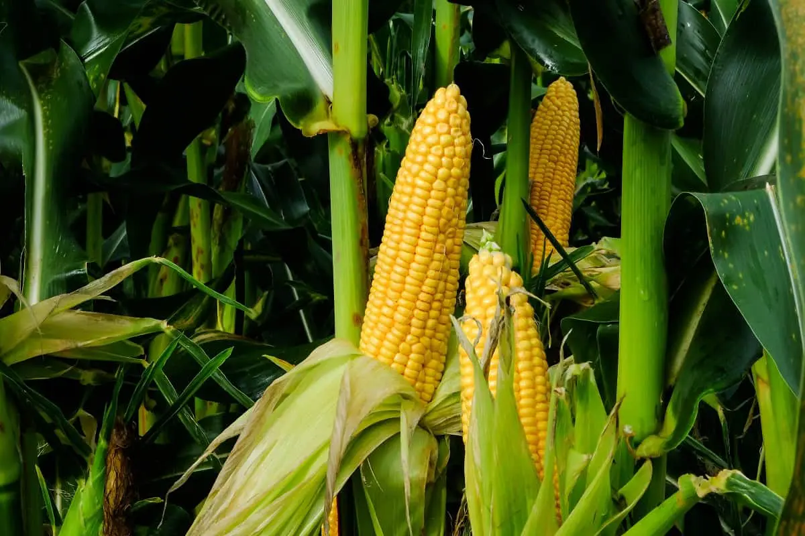

O Agrinho é muito mais que um programa: é um verdadeiro celeiro de ideias e aprendizado para crianças e adolescentes do Paraná. Gerenciado pelo Senar-PR em parceria com a Faep e o Governo do Estado, ele leva a escolas públicas temas cruciais como o agronegócio, o meio ambiente e a cidadania. Imagine só: milhares de alunos, desde os pequenos da educação infantil até os do ensino médio, aprendendo de forma divertida sobre a importância do campo e como ele impacta o dia a dia de todo mundo. Anualmente, o programa culmina em um concurso que estimula a criatividade e o raciocínio dos estudantes. Eles desenvolvem trabalhos incríveis – desenhos, textos, maquetes – com a ajuda dos professores, e os melhores são premiados em um grande evento. O Agrinho não só ensina sobre a vida no campo, mas também forma cidadãos mais conscientes, mostrando que o futuro do nosso estado passa pela valorização de quem produz e pelo cuidado com a natureza.
